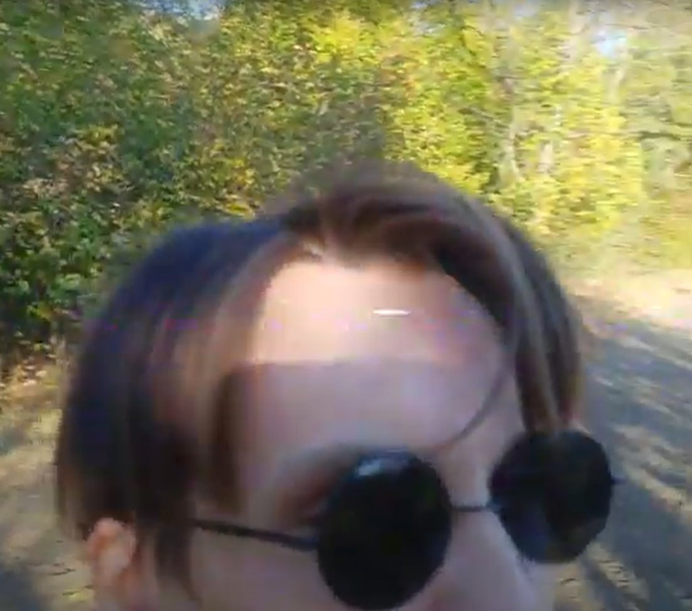
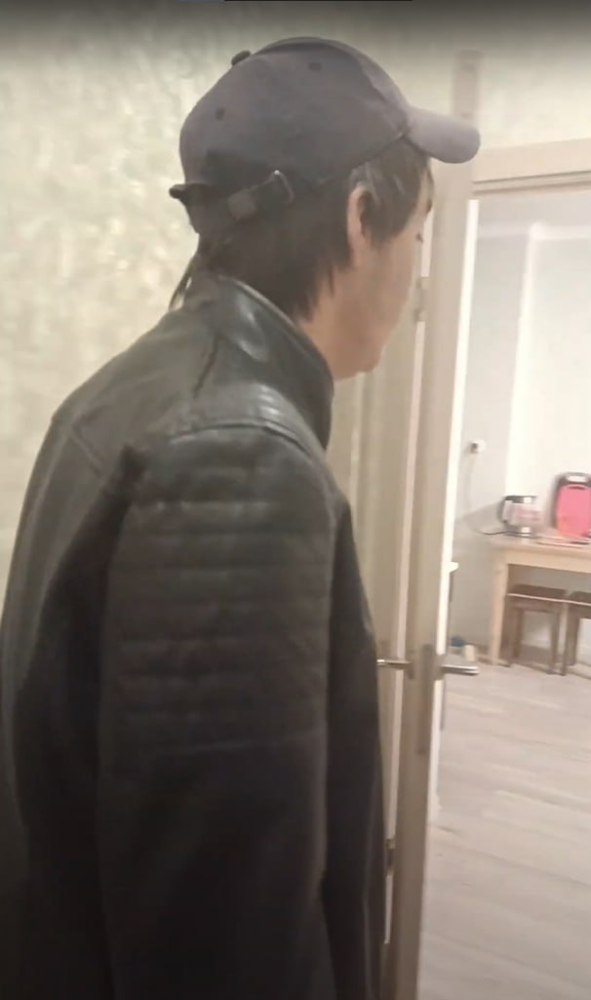
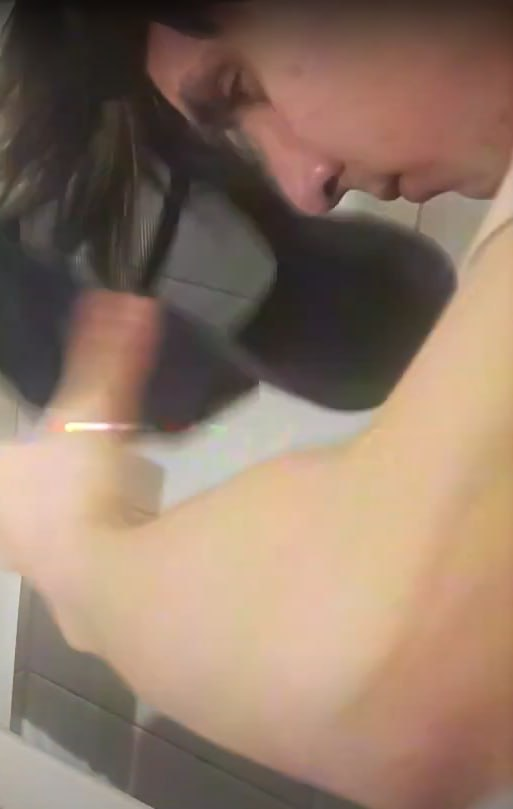
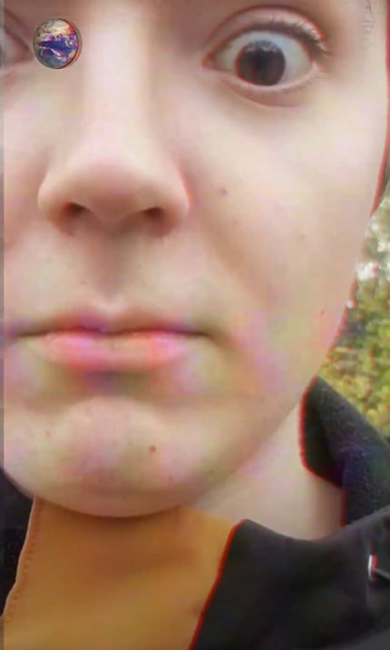
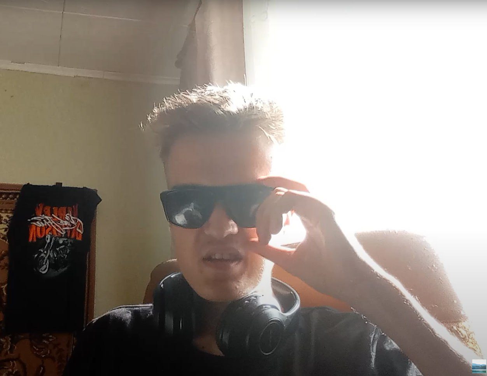

Лица телеканала

Кирилл Новиков
Один из ведущих репортёров Телеканала Новый. Кирилл уже не новый, но и не
старый. Он видит сигнал, даже когда спит. 634% искренности.

Мефодий Стариков
Второй один из ведущих репортёров. Оператор и шаман телеканала. Умеет
собирать эфир из радиошума.

Виктор Курча
Герой Донбасса. Специалист по обслуживанию и ремонту бытовых изделий
домашнего назначения. бессмертные титры.

...
...
Наши спонсоры контента

Яр (с канала Жизнь Яра (который ещё раньше был Omo laif на ютубе))
Человек, при жизни ставший легендой, народный артист Советского Союза,
Украины, России и даже Чечено-Ингушетии, лауреат государственной премии СССР и премии Ленинского
комсомола, человек признанный, известный, авторитетный, мэтр, который творил эту эпоху, и
который сам стал эпохой, человек, которого мы очень уважаеи и любим.
Свяжитесь с нами
📞 8-800-НО-НАС-РАЛ (звонок бесплатный, местный, но номер ненастоящий).
📧 тутПОЧТУвставим@pochta.ru (Может даже читать будем если реальный ящик укажем.)
📡 г. Телеграмск, ул. Йобана, д. 634 (На 634 этаже стоит наше устройство по трансляции каналов).